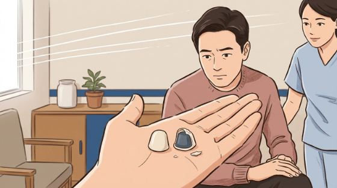
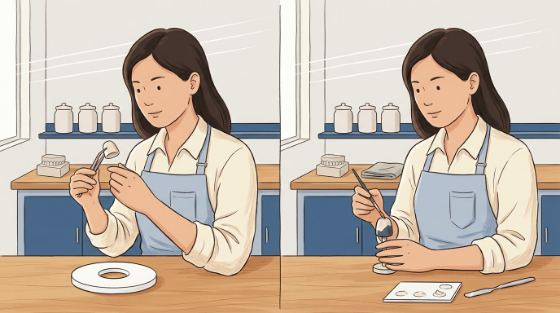
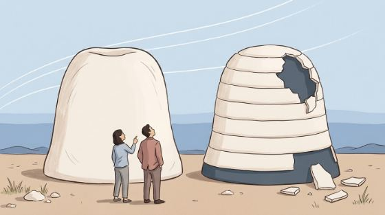
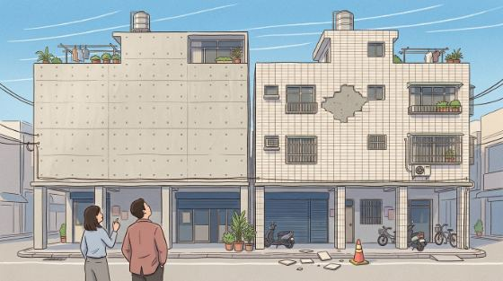
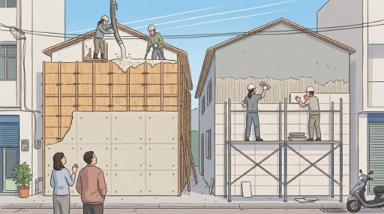
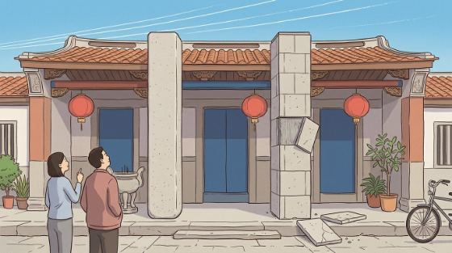
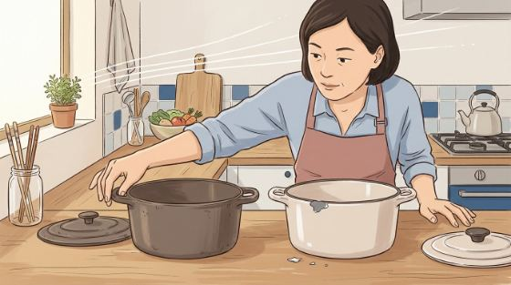

按一下就複製，貼進 Gemini 就可以出圖。全文預設收起來。
第二輪。治「畫面裡沒有讀者」。已出圖 → hero-crown-try1-palm.jpg

第二輪。治「兩個謎要同時解」。已出圖 → hero-crown-try2-hands.jpg

第二輪。治「主體太小」。已出圖 → hero-crown-try3-monument.jpg。**使用者說這個方向有感覺**

第三輪，使用者出的梗（貼磁磚 vs 澆注灌漿）。左清水模、右貼二丁掛，右上剝落一片。共鳴最高

第三輪。直接畫「工法」本身：左邊正在灌漿、右邊正在一片一片貼磁磚

使用者：「石柱有看沒有懂欸」。柱子飄在廟前面看不出在撐什麼，翹起來的石皮讀成貼歪的板子。不要再走這條

第四輪。不是比喻是同一種技術——琺瑯就是把瓷粉燒在金屬上，和金屬燒瓷牙冠一樣。共鳴最高，但沒有建築的尺度感

第五輪。修掉 try7 縮圖上看不到崩口的問題：崩口移到鍋緣、咬進輪廓、放大；並在鑄鐵鍋的同一個位置也磕一塊當對照